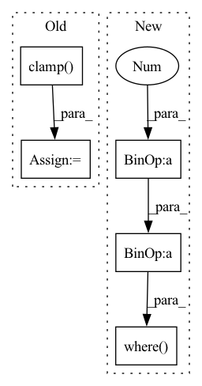

Pattern ID :41125

Before Change
scale, margin = self.scale, self.margin
eps = self.eps
input = torch.clamp(input, -1+eps, 1-eps)
theta = torch.arccos(input) // (batch_size, num_classes)
theta_modified = theta + margin // (batch_size, num_classes)
mesh = torch.arange(0, num_classes).unsqueeze(dim=0) // (1, num_classes)
mesh_target = target.unsqueeze(dim=1) // (batch_size, 1)
After Change
eps = self.eps
cos_th = input
sin_th = torch.sqrt(1 - cos_th**2 + eps)
cos_phi = cos_th * cos_m - sin_th * sin_m // (batch_size, num_classes)
// For target class
if self.easy_margin:
cos_phi = torch.where(cos_th < 0, cos_th, cos_phi) // (batch_size, num_classes)
else:
cos_phi = torch.where(cos_th > self.cos_pi_m, cos_th - margin, cos_phi) // (batch_size, num_classes)
// For non-target class
mask = F.one_hot(target, num_classes=num_classes) // (batch_size, num_classes)
In pattern: SUPERPATTERN
Frequency: 3
Non-data size: 5
Instances
Fragment ID: 115906792
Project Name: tky823/dnn-based_source_separation
Commit Name: a4bde6a5794ce4ec526ff846e07a4de4de24ab04
Time: 2022-02-10
Author: delta9guitar97@gmail.com
File Name: src/criterion/metric_learn.py
M Class Name: AdditiveAngularMarginLoss
N Class Name: AdditiveAngularMarginLoss
M Method Name: forward(4)
N Method Name: forward(4)
M Parent Class: nn.Module
N Parent Class: nn.Module
M File Name: src/criterion/metric_learn.py
N File Name: src/criterion/metric_learn.py
M Start Line: 168
M End Line: 184
N Start Line: 181
N End Line: 199
'>
Before Change
// = \sum_{i=1}^{D_out} log N(y_i|mu(x),sigma(x))
// (B, T, G, D_out) -> (B, T, G)
log_prob = dist.log_prob(target)
log_prob = torch.clamp(log_prob, min=log_prob_min)
loss = torch.sum(log_prob, dim=3) + log_pi
// Calculate negative log likelihood.
// (B, T, G) -> (B, T)
loss = -torch.logsumexp(loss, dim=2)
After Change
// Center target variables and clamp them within +/- 5SD for numerical stability.
centered_target = target - mu
scale = torch.exp(log_sigma)
edge = 5 * scale
centered_target = torch.where(centered_target > edge, edge, centered_target)
centered_target = torch.where(centered_target < -edge, -edge, centered_target)
// Create gaussians with mean=0 and variance=torch.exp(log_sigma)^2
dist = torch.distributions.Normal(loc=0, scale=scale)
'>
Fragment ID: 115906765
Project Name: r9y9/nnsvs
Commit Name: 329ad7fe3900e7fd666d780fafaf1aa6b12b160f
Time: 2020-11-15
Author: zryuichi@gmail.com
File Name: nnsvs/mdn.py
M Class Name: AnonimousClass
N Class Name: AnonimousClass
M Method Name: mdn_loss(7)
N Method Name: mdn_loss(8)
M Parent Class:
N Parent Class:
M File Name: nnsvs/mdn.py
N File Name: nnsvs/mdn.py
M Start Line: 55
M End Line: 108
N Start Line: 96
N End Line: 144
'>
Before Change
raise ValueError("reduction should in ("mean", "sum")")
if with_logits:
y_pred = torch.sigmoid(y_pred)
y_pred = torch.clamp(y_pred, 1e-6, 1 - 1e-6)
// 前式与后式关于0.5对称(The former and the latter are symmetric about 0.5)
// y_true 为-1. 即: 既不是正样本、也不是负样本。
return func((alpha * y_true * -torch.log(y_pred) * (1 - y_pred) ** gamma +
After Change
// target == -1. It"s neither a positive sample nor a negative sample.
return torch.sum(
torch.where(target == -1, torch.tensor(0., device=target.device),
alpha * (1 - pred) ** gamma * target * torch.clamp_max(-torch.log(pred), 100) +
(1 - alpha) * pred ** gamma * (1 - target) * torch.clamp_max(-torch.log(1 - pred), 100)))
class FocalLoss(nn.Module):
'>
Fragment ID: 115906770
Project Name: jintao-huang/efficientdet_pytorch
Commit Name: b140444fc9d402a1206ec4a8d6e0514b82003371
Time: 2021-03-31
Author: hjt_study@qq.com
File Name: models/loss.py
M Class Name: AnonimousClass
N Class Name: AnonimousClass
M Method Name: weighted_binary_focal_loss(4)
N Method Name: weighted_binary_focal_loss(6)
M Parent Class:
N Parent Class:
M File Name: models/loss.py
N File Name: models/loss.py
M Start Line: 9
M End Line: 32
N Start Line: 21
N End Line: 24